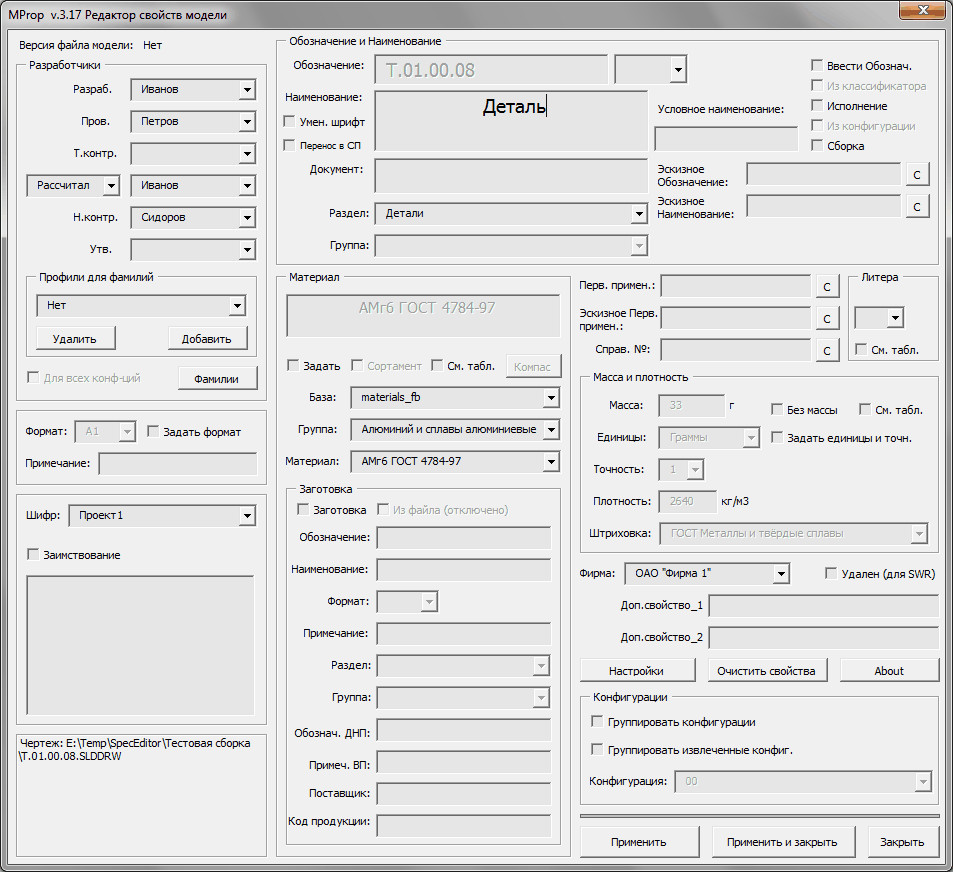
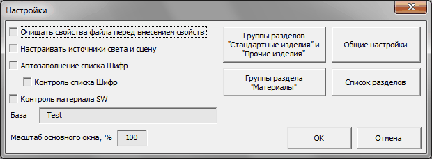
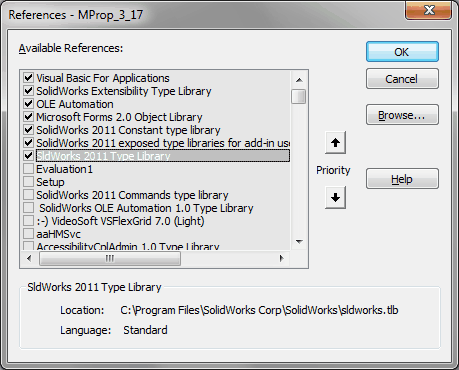

Макрос MProp |
Top Previous Next |
|
Предназначен для заполнения свойств моделей изделий, разрабатываемых на предприятии (сборок и деталей). Cвойства, заполненные MProp, используются для отображения в основной надписи чертежа, для считывания в спецификацию (SWR-спецификация или SpecEditor) и для регистрации в хранилище PDMWorks. Макрос может быть запущен из документа сборки, детали или чертежа. Документ должен быть предварительно хотя бы раз сохранен и для чертежа требуется наличие вида, ссылающегося на модель. Не рекомендуется использовать данный макрос для заполнения свойств моделей из разделов "Стандартные изделия", "Прочие изделия", "Материалы" - для этого есть макрос SProp. 
qВерсия файла модели - отображается свойство Revision для данной модели. qРазработчики.Выпадающие списки с фамилиями и список "Характер работы". Списки фамилий можно отредактировать нажав кнопку Фамилии. Будет отредактирован файл MProp\MProp_Fam.txt. Список "Характер работы" можно изменить отредактировав файл MProp\MProp_Work.txt. oПрофили для фамилий. Выпадающий список с именами профилей. Выбор профиля позволяет быстро назначить требуемый набор фамилий и значение для списка "Характер работы". Профили сохраняются в файле MProp\MProp_Prof.txt. Не рекомендуется редактировать этот файл вручную. ·Добавить - добавляет новый профиль или обновляет существующий. Предварительно необходимо выбрать из выпадающих списков требуемые фамилии и ввести имя профиля. ·Удалить - удаляет выбранный профиль из списка. oДля всех конфигураций - доступно при наличии нескольких конфигурации в документе. Если флажок установлен, то при нажатии кнопки Применить или Применить и закрыть свойства для фамилий и характера работы создатутся или обновятся для всех конфигураций. oФамилии - вызывает для редактирования файл MProp\MProp_Fam.txt со списком фамилий. Обновленные списки будут доступны после перезапуска макроса. qОбозначение и Наименование oОбозначение - несколько полей для ввода обозначения документа, вид которых зависит от флажков Ввести обознач., Из классификатора, Исполнение и Из конфигурации. oВвести обознач. - отключает автоматическое считывание обозначения и\или наименования из имени файла. При снятом флажке, если в Общих настройках выбрано Имя файла = Обозначение, то поле Обозначение недоступно. Если выбрано Имя файла = Обозначение Наименование, то для ручного ввода недоступно также и поле Наименование. oИз классификатора - доступен при выбранном Ввести обознач. Преобразует одно поле для ввода Обозначения в форму для ввода обозначения в виде АБВГ.ХХХХХХ.ХХХ. Первая часть формы представляет собой выпадающий список. Его значения считываются из файла MProp\MProp_Firm.txt (см. пункт Фирма). oИсполнение - активизирует поле для ввода номера исполнения. При установленном флажке свойство Обозначение прописывается не только на вкладку Настройки но и на вкладку активной конфигурации. Данный флажок не нужно устанавливать для исполнения 00. oИз конфигурации - доступен при выбранном Исполнение. Считывает номер исполнения из имени конфигурации. oНаименование - доступность зависит от Ввести обознач. Наименование можно вводить в несколько строк, разделяемых Enter. oУмен. шрифт - уменьшает шрифт для поля Наименования. Соотвествено уменьшается шрифт и в основной надписи. oПеренос в СП - сохраняет для Наименования деление на строки при отображении в спецификации. oУсловное наименование - дополнительная переменная часть Наименования для разных исполнений, которая указывается в поле Код для групповой спецификации. oДокумент - наименование документа. Поле недоступно и заполняется автоматически, если в Обозначении выбран один из основных типов документа (СБ, ГЧ и т.д.). Для остальных типов документов должно заполняться вручную. oРаздел - список разделов специфкации. Для разделов Детали и Сборочные единицы можно не заполнять, спецификация определит его по расширению файла. oГруппа - список групп для документов из разделов Стандартные изделия, Прочие изделия и Материалы. Доступен только при выборе соотвествующего раздела. oЭскизное Обозначение - поле для хранения эскизного или альтернативного обозначения. При нажатии кнопки С значение в это поле копируется из поля Обозначение. При установленном флажке Ввести обознач. значения этих полей меняются местами. oЭскизное Наименование - поле для хранения эскизного или альтернативного наименования. При нажатии кнопки С значение в это поле копируется из поля Наименование. oСборка\Деталь - данный флажок позволяет установить для детали свойства как для сборки и, наоборот, для сборки как для детали. qМатериал oЗадать - при установленном флажке возможен ручной ввод материала, в противном случае материал считывается из модели. Доступен только для деталей. oСортамент - позволяет вводить материал в три строки. Поля ввода сортамента сделаны в виде выпадающих списков. Содержание списков берется из файла MProp_Sort.txt. oСм. табл. - используется для групповых чертежей. Текст "См. табл" прописывается в поле материал основной надписи. oКомпас - доступна при установленном флажке Задать и если в модель внесены свойства из справочника материалов от АСКОН. При нажатии на кнопку свойства считываются в поля для задания материала. Сделано так потому, что компас не понимает солидовские конфигурации и заносит свои свойства только на вкладку Настройка. oБаза - список доступных баз материалов формата sldmat. Есть нюанс. Макрос видит базы только из одной первой папки, прописанной в настройках путей SW. oГруппа - список групп материалов для выбранной базы. ВНИМАНИЕ! МАКРОС НЕ РАБОТАЕТ С МНОГОУРОВНЕВЫМИ БИБЛИОТЕКАМИ МАТЕРИАЛОВ, уровней должно быть не более 2. oМатериал - список материалов для выбранной группы. oЗаготовка ·Заготовка - указывает на то, что в качестве материала используется заготовка. При установленном флажке задание материала вручную становится недоступным. ·Из файла - сведения о заготовке считываются для детали из свойств базовой детали, для сборки - из первого компонента дерева. ·Обозначение - обозначение заготовки. Для заготовок из разделов Стандартные изделия и Прочие изделия не заполняется. ·Наименование - наименование заготовки. Для заготовок из разделов Стандартные изделия и Прочие изделия должно включать полное наименование с указанием документа на поставку (ДНП). ·Формат - формат заготовки ·Примечание - примечание для спецификации ·Раздел - раздел заготовки ·Группа - список групп для документов из разделов Стандартные изделия и Прочие изделия. Доступен только при выборе соотвествующего раздела. ·Обознач. ДНП - документ на поставку для ВП. Доступен только при выборе разделов Стандартные изделия и Прочие изделия. ·Примеч. ВП - примечание для ВП. Доступен только при выборе разделов Стандартные изделия и Прочие изделия. ·Поставщик - поставщик для ВП. Доступен только при выборе разделов Стандартные изделия и Прочие изделия. ·Код продукции - код продукции для ВП. Доступен только при выборе разделов Стандартные изделия и Прочие изделия. qПерв. примен. - первичное применение для чертежа. При нажатии кнопки С значение в это поле копируется из поля Обозначение. qЭскизное Перв. примен. - поле для хранения эскизного первичного применения для чертежа. При нажатии кнопки С значение в это поле копируется из поля Перв. примен, а при последующем нажатии содержания этих полей меняются местами. qСправ. № - справочный номер для чертежа. qЛитера oЛитера - выпадающий список с литерами. oСм. табл. - используется для групповых чертежей. Текст "См. табл" прописывается в поле литера основной надписи. qМасса и плотность oМасса - масса в указаных единицах. oБез массы - в поле масса основной надписи будет прочерк. oСм. табл. - используется для групповых чертежей. Текст "См. табл" прописывается в поле масса основной надписи. oЕдиницы - доступен при установленном флажке Задать единицы и точн. Позволяет задать единицы измерения массы. oТочность - доступен при установленном флажке Задать единицы и точн. Позволяет задать точность измерения массы. oЗадать единицы и точн. - позволяет вручную указать требуемые единицы и точность для задания массы. В автоматическом режиме действует следующее правило. Детали менее 100 г записываются в граммах и с одним знаком после запятой, 100 г и более - в килограммах и с двумя знаками. oПлотность - поле для задания плотности. Доступно только в случае если материал SW не задан. oШтриховка - список штриховок из файла SW SLDWKS.ptn. Доступty только в случае если материал SW не задан. qФормат - список форматов. Доступность определяется флажком Задать формат и установкой проверки формата из общих настроек. qЗадать формат - При установленном флажке формат задается вручную. При снятом формат считывается из чертежа. Если проверка формата не выбрана, то флажок всегда установлен и недоступен для изменения. qПримечание - примечание для спецификации. В случае если в поле формат стоит *) или БЧ, то поле не доступно и в нем отображается соотвественно формат\форматы или масса. qШифр - список шифров проекта или названий темы. Считывается изи файла MProp_Project.txt. Поле дополнительное и отображается в нижней части каждого листа чертежа. qФирма - список фирм. Считывается из файла MProp\MProp_Firm.txt. Файл содержит пары строк - название фирмы и код, например qДоп. свойство №1 - дополнительное свойство пользователя. qДоп. свойство №2 - дополнительное свойство пользователя. qЗаимствование - при установленном флажке активизируется список шифров проектов, в котором можно указать, в каких проектах заимствован данный документ. Смысл данной опции попробую объяснить на примере. Допустим есть некий проект, который делает Петя и в нем есть некая деталь. И есть другой проект, который делает Вася. И вот Вася хочет заимствовать деталь у Пети. Петя, прежде чем передать деталь Васе, запускает макрос и помечает деталь как заимствованную, указывая при этом шифр Васиного проекта. Теперь, при попытке внести в деталь изменение и сохранить чертеж с помощью макросов SaveDRW или SaveAsPDF Петя получит предупреждение о том, что деталь была заимствована в указанном проекте. И дальше он должен обновить деталь и у Васи тоже. Последнее, конечно, на его совести, но главное, что не надо составлять списки заимствованных или держать все в голове. qОчистить свойства - удаляет всю информацию из вкладок Суммарная информация, Настройки и Конфигурации. qНастройки - вызывает окно настроек (см. ниже) qУдален – модель помечается как удаленная для SWR спецификации. qКонфигурации oГруппировать конфигурации –задает параметры для всех конфигураций файла, позволяющие отображать их под одной позицией в спецификации SpecEditor. oГруппировать извлеч. конфигурации–задает параметры для вложенных конфигураций внутри одной конфигурации верхнего уровня, позволяющие отображать их под одной позицией в спецификации SpecEditor. oКонфигурация - список конфигураций файла. При смене конфигурации свойства считываются заново и если не была нажата кнпка Применить, то все изменения для предыдущей конфигурации пропадают. qПрименить - запись изменений в свойства файла модели и чертежа. qПрименить и закрыть - запись изменений в свойства файла модели и чертежа и закрытие окна макроса. qЗакрыть - закрыть окно макроса без сохранения изменений. qИнформационное поле - поле в левом нижнем углу макроса, в котором отображается различная дополнительная информация oесли макрос запущен в чертеже - имя файла модели, с которой сделан первый вид чертежа; oесли макрос запущен в модели - имя файла чертежа (при его наличии) или информация об отсутствии чертежа или информация о другой конфигурации данной модели использованной в первом виде чертеже.
 Настройки сохраняются в файле MProp\MProp.ini. qОчищать свойства файла перед внесением свойств - при установленном флажке перед внесением свойств будет очищаться вся информация с вкадок Суммарная информация, Настройки и Конфигурации (для активной конфигурации). Исключение составляет только свойство "Количество". qНастраивать источники света и сцену - При внесении свойств также будут настроены сцена и источники освещения. Это сделано, чтобы унифицировать освещение для вновь создаваемых и уже имеющихся в наличии файлов. qАвтозаполнение списка Шифр - при внесении свойств, любой новый указанный шифр будет добавляться к списку MProp\MProp_Project.txt qКонтроль списка Шифр - если указанный шифр отсутствует в списке, то при внесении свойств будет выдано предупреждение. qКонтроль материала SW - при установленном флажке макрос будет проверять, используется ли основная база материалов, указанная в поле База. Сделано для того, чтобы унифицировать применяемые при проектировании материалы, сведя их в одну базу. qМасштаб основного окна - можно задать процент уменьшения основного окна макроса при его использовании на "низких" мониторах. qГруппы разделов "Стандартные изделия" и "Прочие изделия" - редактирование файла SpecEditor\SpecEditor_Groups.txt со списком групп разделов "Стандартные изделия" и "Прочие изделия". qГруппы раздела "Материалы" - редактирование файла SpecEditor\SpecEditor_MaterialGroups.txt со списком групп раздела "Материалы". qОбщие настройки - вызов окна Общие настройки (см. пункт Установка и настройка) qСписок разделов - редактирование файла SpecEditor\SpecEditor_Sections.txt со списком разделов спецификации. qОк - сохранение изменений в ini файл. qОтмена - выход без сохранения изменений.
Библиотеки:  |